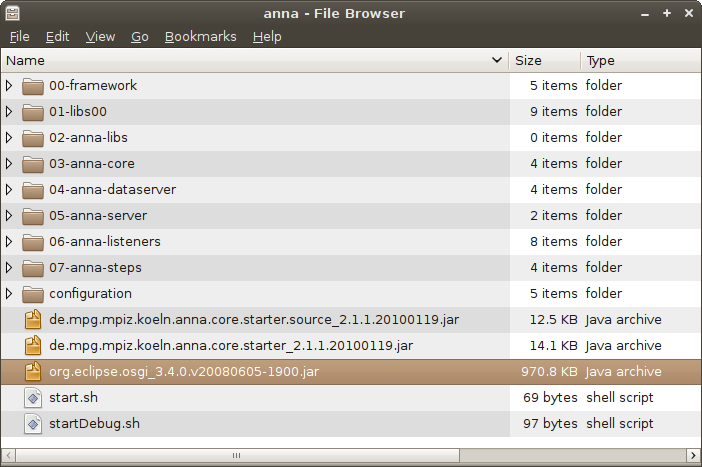

-
extract to location of your choice
 -
execute start.sh or startDebug.sh
If everything went OK, you will see following output on your terminal:
let's get things rolling
MONITOR ++++++++++++++++++++++++++++++++++++++++++++++++++++++++++++++++++
TestStep state=REGISTERED (changed)
++++++++++++++++++++++++++++++++++++++++++++++++++++++++++++++++++++++++++
MONITOR ++++++++++++++++++++++++++++++++++++++++++++++++++++++++++++++++++
TestStep state=CHECK_NEED_TO_RUN (changed)
++++++++++++++++++++++++++++++++++++++++++++++++++++++++++++++++++++++++++
executing method "canBeSkipped"
MONITOR ++++++++++++++++++++++++++++++++++++++++++++++++++++++++++++++++++
TestStep state=WAIT_FOR_REQ (changed)
++++++++++++++++++++++++++++++++++++++++++++++++++++++++++++++++++++++++++
executing method "requirementsSatisfied"
MONITOR ++++++++++++++++++++++++++++++++++++++++++++++++++++++++++++++++++
TestStep state=RUNNING (changed)
++++++++++++++++++++++++++++++++++++++++++++++++++++++++++++++++++++++++++
executing method "run"
!!!!!!!!!!!!!!!!!!!!!!
pipeline finished!
!!!!!!!!!!!!!!!!!!!!!!
MONITOR ++++++++++++++++++++++++++++++++++++++++++++++++++++++++++++++++++
TestStep state=DONE (changed)
++++++++++++++++++++++++++++++++++++++++++++++++++++++++++++++++++++++++++
RUNTIMES +++++++++++++++++++++++++++++++++++++++++++++++++++++++++++++++++
TestStep
state CHECK_NEED_TO_RUN time[sec] 0 running false
state DONE time[sec] 0 running false
state WAIT_FOR_REQ time[sec] 0 running false
state RUNNING time[sec] 0 running false
++++++++++++++++++++++++++++++++++++++++++++++++++++++++++++++++++++++++++
-
In order to include any other Step into the system, just put according jar files into 07-anna-steps folder
For further information, including how to build your own steps, please take a look at the documentation and Examples!